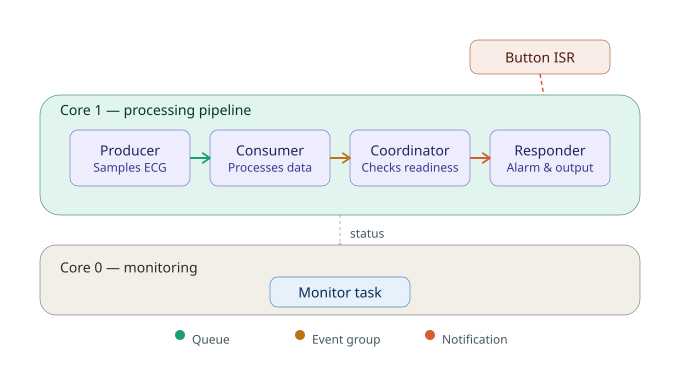

Real-Time Systems (EEL 4775) — Final Integration Capstone
A FreeRTOS-based cardiac ICU patient monitor on ESP32-S3 that guarantees hard real-time response to critical vitals alarms even under sensor failure or CPU overload.
This project implements a real-time cardiac ICU patient monitoring system on an ESP32-S3, built in FreeRTOS and simulated in Wokwi. The system's core job is to move ECG telemetry from sensor to responder fast enough, and reliably enough, that a real bedside monitor could trust it — hard deadlines, not best-effort.
The system runs a four-task pipeline split across both ESP32-S3 cores: a producer task samples ECG data, a consumer task processes it, a coordinator task evaluates readiness and synchronization state, and a responder task handles the resulting alarm/output logic. A fifth monitoring task runs independently on Core 0, reporting system status over serial or a lightweight web interface.
Rather than relying on a single synchronization mechanism everywhere, the pipeline deliberately uses three different FreeRTOS IPC primitives, each chosen for the job it's actually suited to: a queue hands ECG samples from producer to consumer without blocking either side; an event group enforces an AND-rendezvous so the coordinator only proceeds once every prerequisite condition is met; and direct task notifications provide the fastest possible wakeup path — both from the coordinator to the responder, and from a hardware interrupt (button press) straight to the responder for simulated emergency events.
Two real concurrency bugs surfaced during development and are documented rather than hidden: both were task-creation-order races, where a higher-priority task on one core began running before an IPC object it depended on had been created on the other core, causing a null-handle fault. The fix in both cases was the same underlying lesson — all IPC objects (semaphores, queues, event groups) must be created before any task that references them, regardless of which core creates which task first. This is the kind of subtle multi-core hazard that doesn't show up in single-core FreeRTOS work, and catching it firsthand is part of what makes this a genuine systems project rather than a scheduling exercise.
The system also includes a measured comparison of its two fastest signaling paths: direct task notification and binary semaphore, benchmarked with esp_timer_get_time() timestamp deltas rather than a simulated logic analyzer, since Wokwi's timing behavior made hardware-level measurement unreliable. Both paths cluster tightly around 17–19 µs baseline latency, with occasional outliers attributable to simulator jitter rather than a fundamental property of either primitive — an honest result, not a manufactured "one primitive wins" narrative.
Together, these choices reflect the project's real goal: not just getting an ECG pipeline to run, but building one where every timing and synchronization decision can be defended, measured, and shown to fail safely when something goes wrong.

The pipeline runs across both ESP32-S3 cores. On Core 1, four tasks — producer, consumer, coordinator, and responder — form the main ECG processing chain, connected by a queue, an event group, and direct task notifications. A button-triggered ISR notifies the responder directly for simulated emergency events. An independent monitor task runs on Core 0, reporting system status without interfering with the real-time pipeline.
WCET was measured with esp_timer_get_time() bracketing each task's active work (excluding blocking waits), following the same instrumentation pattern used in earlier apps. C is reported as measured max +30% margin. All four Core 1 tasks share the producer's 50 ms cycle as their period, with an implicit deadline equal to the period (D = T).
| Task | Period T (ms) | Deadline D (ms) | WCET C (ms) | U = C/T | Priority | Core |
|---|---|---|---|---|---|---|
| Producer | 50 | 50 | 0.046 | 0.0009 | 8 | 1 |
| Consumer | 50 | 50 | 15.629 | 0.3126 | 8 | 1 |
| Coordinator | 50 | 50 | 0.013 | 0.0003 | 9 | 1 |
| Responder | 50 | 50 | 11.824 | 0.2365 | 12 | 1 |
| Monitor | 1000 | 1000 | — | — | 4 | 0 |
Total utilization (Core 1, n=4): U ≈ 0.0009 + 0.3126 + 0.0003 + 0.2365 = 0.5503
Liu & Layland bound (n=4): 4×(21/4 − 1) ≈ 0.7568
Verdict: U = 0.55 ≤ 0.7568 — schedulable under Rate Monotonic, with real margin.
One honest outlier worth noting: the consumer's measured max jumped from a steady ~2 ms baseline to a single 12 ms spike partway through the run and didn't fully recover afterward, most likely a one-off scheduling stall from simulator jitter rather than a property of the algorithm itself. It's included in the C value above rather than smoothed over, the same way the notification-vs-semaphore latency comparison reported its outliers honestly.
Utilization alone confirms schedulability under the Liu & Layland sufficient bound, but Response-Time Analysis (RTA) gives a tighter, per-task guarantee by iterating R = C + ∑ ⌈R/Tj⌉×Cj over all higher-priority tasks j until R stops changing. Producer and Consumer share priority 8, so each is additionally analyzed as blocked by one worst-case execution of the other (equal-priority round-robin interference).
| Task | Priority | RTA iteration | Converged R (ms) | Deadline D (ms) | Margin |
|---|---|---|---|---|---|
| Responder | 12 (highest) | R = C = 11.824 | 11.824 | 50 | 38.176 ms |
| Coordinator | 9 | R₀=0.013 → R₁=0.013+11.824=11.837 → converged | 11.837 | 50 | 38.163 ms |
| Producer | 8 (tied) | R₀=0.046 → R₁=0.046+11.824+0.013+15.629=27.512 → converged | 27.512 | 50 | 22.488 ms |
| Consumer | 8 (tied) | R₀=15.629 → R₁=15.629+11.824+0.013+0.046=27.512 → converged | 27.512 | 50 | 22.488 ms |
Result: every task's converged worst-case response time is comfortably under its 50 ms deadline — the tightest case (Producer/Consumer) still has 22.5 ms of slack. This is a stronger claim than utilization alone: RTA accounts for the actual interference pattern each task faces, not just aggregate load.
Priorities were assigned by criticality of consequence, not strictly by period (all four share the same 50 ms period, so classic Rate-Monotonic ordering by period doesn't differentiate them). Responder holds the highest priority because it's the alarm/output stage — any delay here directly delays a patient-facing alert. Coordinator is next, since it gates the responder and should not itself become a bottleneck. Producer and Consumer share the lowest priority (8): their work has slack (confirmed by RTA above) and neither is itself alarm-facing, though tying their priorities is a simplification — a stricter design would break the tie by giving Producer slight priority over Consumer, since a delayed sample is recoverable but a delayed send risks queue buildup. This is flagged here rather than glossed over.
The queue boundary between producer and consumer is governed by an explicit, defended contract rather than implicit behavior:
This analysis follows the structure of IEC 62304 (medical device software lifecycle), which requires identifying software hazards, their effects, and the risk controls in place — the standard that governs software risk specifically, as distinct from IEC 60601's broader electrical/mechanical safety scope. Each hazard below is drawn from actual behavior observed or engineered during development, not a hypothetical checklist.
| Hazard | Effect | Mitigation | IEC 62304 mapping |
|---|---|---|---|
| Queue overflow under consumer stall | ECG samples silently dropped; displayed HR could lag reality | Queue sized with ~2.7× margin over worst-case stall estimate; drop-newest policy (never blocks the producer); overflow event counted and logged | §5.2 risk control implementation |
| Task-creation-order race (IPC object used before creation) | NULL-handle fault, full system crash on boot — total loss of monitoring | Found and fixed during development: all IPC objects (queue, event group, semaphore) now created before any task that references them, documented as a standing rule | §5.1 development planning & defect resolution |
| Consumer execution-time outlier (measured 12 ms spike vs. ~2 ms baseline) | Delayed arrhythmia decision within a single 50 ms cycle | WCET measured with margin (C = max + 30%); total utilization (0.55) stays well under the Rate-Monotonic bound (0.7568) even with the outlier included, so one slow cycle doesn't cascade into missed deadlines | §5.5 verification of real-time performance |
| Responder task stalls or is starved (missed/delayed alarm) | An abnormal HR reading goes unflagged — the highest-severity failure mode for this system | Responder runs at the highest priority in the task set (12); per-task heartbeat counters are exposed on the monitor output so a stalled responder is immediately visible rather than silently failing | §5.7 problem resolution; alarm-system intent aligned with IEC 60601-1-8 |
| Spurious button-ISR triggers (switch bounce) | False nurse-call events, unnecessary responder wakeups | 50 ms software debounce window in the ISR before a signal is accepted | §5.5 verification of interrupt handling |
Taken together, these hazards point to one design theme worth calling out explicitly: the failure mode that matters most in a patient monitor isn't "the system is slow" — it's "the system is silent." That's why the mitigations lean on visibility (heartbeats, overflow counters, latency logging) as much as raw timing margin. A system that fails should fail loudly.
The responder's wait was changed from an unbounded block (portMAX_DELAY) to a timeout of 200 ms (4× the producer's period). If no pipeline cycle completes within that window, the responder treats the system as stalled: it logs a STALE event using the last known heart rate rather than silently going quiet, and keeps re-announcing every 200 ms until fresh data resumes. This is deliberately decoupled from where the pipeline breaks — the responder doesn't need to know whether the producer, consumer, or coordinator failed, only that a cycle didn't arrive in time. To demonstrate this on demand rather than only describe it, an INDUCE_FAILURE compile switch simulates a sensor disconnect: the producer stops pushing samples after 100 cycles (~5 seconds), as if the ECG lead had come loose.
Before running the induced-failure test, the expected behavior was: the consumer's queue-receive timeout (100 ms) would fire repeatedly once the producer stopped; the event group would stop being set, so the coordinator — which waits with portMAX_DELAY and has no timeout of its own — would block indefinitely; and the responder, independent of the coordinator's blocked state, would detect the stall via its own 200 ms timeout and begin announcing STALE using the last known reading. The system should not crash, and should not go silent.
The system ran 100 normal cycles (5.0 s), then the induced failure fired at t=5.04s. The consumer began logging stall warnings almost immediately. The first STALE event appeared 150 ms later at t=5.19s, using the last known reading (HR=73 bpm), and continued firing every ~200 ms without interruption for the remainder of the 43-second run (178 consecutive STALE events by the end of the captured log). The system never crashed and never went silent. One deviation: around t=20–23s, a few spurious wakeups briefly interrupted the STALE sequence (real latency values in the 750–1300 µs range, distinct from the near-zero noise seen elsewhere), most likely simulator noise on the floating button GPIO rather than an intentional press. Detection resumed correctly immediately afterward.
Observed behavior matched the prediction closely. The 150 ms gap before the first STALE event (rather than an immediate announcement at the moment of failure) is expected and correct: the timeout window has to fully elapse from the last successful cycle, not from the failure event itself, so a delay up to one timeout period is inherent to the design, not a bug. The spurious-wakeup blip was not predicted and is treated as an artifact of Wokwi's simulated GPIO rather than a flaw in the degradation logic — the STALE detector correctly resumed on its own once the noise passed, without any special handling required, which is itself evidence the timeout-based approach is robust to transient interruptions.
Hardware/target: ESP32-S3, simulated in Wokwi (no physical board required to reproduce). Toolchain: ESP-IDF via the Wokwi web IDE, which handles the build and flash steps automatically inside the browser.
https://wokwi.com/projects/469906597165240321Compile-time switches (top of main.c) let you reproduce every result on this page:
| Switch | Default | Purpose |
|---|---|---|
USE_WEBSERVER | 0 | 0 = serial monitor output (no Wi-Fi needed); 1 = web dashboard over Wokwi's simulated Wi-Fi |
MEASURE_SEMAPHORE_LATENCY | 0 | 0 = responder listens to the coordinator's routine per-cycle notification (normal operation, used for the task table and degradation demo); 1 = isolates the button-triggered semaphore path for the Section 7 latency comparison only |
INDUCE_FAILURE | 0 | 1 = simulates a sensor disconnect after 100 cycles (~5 s), triggering the graceful-degradation path documented above |
To reproduce the fault-injection demo specifically: set INDUCE_FAILURE to 1, keep MEASURE_SEMAPHORE_LATENCY at 0, run the simulation, and watch the serial log transition from normal [responder] cycle OK lines to repeated [Medical] STALE alerts once the simulated sensor drops out.
This system is tailored toward safety-critical and medical embedded roles. That choice shaped which features made the cut and which didn't — a consumer-IoT framing would have prioritized connectivity and UX polish; this one prioritizes defensibility instead.
Concretely, that meant treating a few things as non-negotiable rather than nice-to-have:
None of this required exotic engineering — just consistently choosing the boring, defensible option (a timeout instead of an infinite wait, a counter instead of silent failure, a real log instead of a claimed number) at every decision point. That consistency is the actual portfolio artifact here, more than any single feature.
The content below mirrors README.md at the repo root, which is the canonical submission artifact.
AI was used for formatting, wording, and document structure only. All calculations, analysis, engineering reasoning, and design decisions in this document are my own.
Ramkissoon-FINAL-RTS26Summer
CORE 0 (observability plane)
+--------------------------------------------------------------+
| serial_monitor_task / webmonitor_task (pri 4, 1000 ms) |
| reads only: queue depth, event bits, heartbeats, decision |
+--------------------------------------------------------------+
^ read-only, no write hazard
==================================================================
CORE 1 (real-time plane)
+-----------+ Queue +-----------+ EvtGrp +-------------+ Notify +-----------+
| producer |---------->| consumer |---------->| coordinator |---------->| responder |
| "ecg_ | | "arr_ | | "sync" | | "alert" |
| sample" | | decide" | | pri 9 | | pri 12 |
| pri 8 | | pri 8 | | | | (highest) |
+-----------+ +-----------+ +-------------+ +-----------+
^
Notify/Sem |
+-----------+
| button |
| ISR GPIO18|
+-----------+
The pipeline runs across both ESP32-S3 cores. On Core 1, four tasks form the ECG processing chain, connected by three distinct IPC primitives chosen for the job each is suited to: a queue (producer → consumer, non-blocking send), an event group (AND-rendezvous, both halves of a cycle → coordinator), and direct task notification (coordinator → responder, and button ISR → responder, identical wakeup path). An independent monitor task runs on Core 0.
See the full task table, RTA convergence, priority defense, and producer/consumer contract in the Task Table & WCET Evidence section above — reproduced identically here as part of the README.
See the full IEC 62304–mapped hazard table in the Hazard Analysis & Standard Mapping section above.
See the Predicted / Observed / Analysis writeup in the Graceful Degradation section above.
See the Build & Run section above for full steps and compile-time switches.
See the Tailored For section above.
Wokwi project: Ramkissoon-FINAL-RTS26Summer
Wokwi URL: https://wokwi.com/projects/469906597165240321